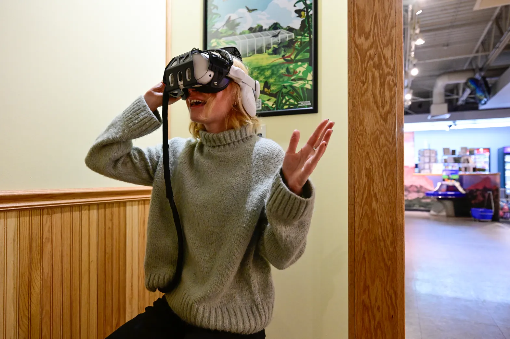
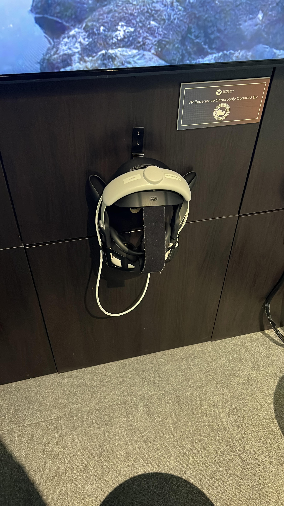
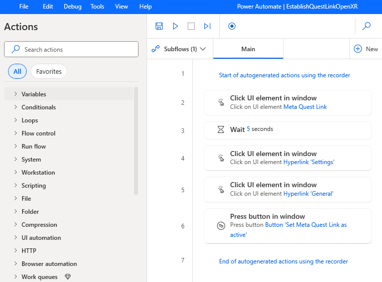

TL;DR Summary
Ethan led a successful initiative to automate the daily startup and recovery of VR stations running the WildX app across multiple venues. He designed a 3-tier fallback system that ensured uninterrupted guest experiences, even when hardware or software failed. The solution used batch scripts, process monitoring, and VR streaming tools like Virtual Desktop. While the prototype was ultimately shelved in favor of a broader team-led solution, Ethan’s work directly influenced the design of more scalable and reliable systems now in production.
My Role
As the Virtual Reality Experience Manager at Wildlife Protection Solutions, I led operations and automation for the WildX application—an immersive VR experience deployed at public venues across Colorado. My responsibilities included managing technical systems, training staff, improving guest experiences, and building automation tools to scale operations.
About WildX

An Immersive Wildlife Experience
WildX is a virtual reality app that allows users to explore the globe and view 360° wildlife footage captured during real conservation efforts. Each deployment was customized for the location—whether highlighting spiders at the Butterfly Pavilion or aquatic life at the Downtown Aquarium in Denver, Colorado.
Initial Challenge
As we expanded to multiple venues, manually starting and monitoring each system became time-consuming and unsustainable. The goal: implement a fully automated launch and shutdown system to increase efficiency and reduce daily manual tasks.
Goal: Automate Startup and Improve Reliability
- Boot systems automatically each morning
- Ensure reliable guest experiences without staff intervention
- Recover gracefully from headset or connection failures
The Solution: Redundancy-Based Automation System
I designed a 3-tier system to ensure failover and system continuity:

1Primary Setup
- Wired headset connected to a PC and mirrored to a TV
- Automatic morning startup and nightly shutdown
2Wireless Redundancy
- Triggered when a cable disconnect or crash is detected
- Launched
Virtual Desktopto wirelessly stream from headset to PC

3Local Fallback
- If wireless streaming fails, system launches a local video mode
- Maintains continuity even without tracking or PC connection
Implementation Details
- Windows
batch scriptsmonitored headset and app processes Power Automateand macro tools triggered fallbacks- Used a VR-optimized router to improve wireless stability
“If the first link failed, it would go to the redundancy and so on. The system worked as intended.” — Ethan Ordorica
Tech Stack
- Windows batch scripting
- Power Automate macros
- Virtual Desktop (3rd-party VR streaming)
- Selenium (for future browser automation)
- Meta Quest / Oculus headsets
Deployment Experience
I deployed the system at the Butterfly Pavilion for real-world testing. While the solution ran successfully, it was paused after internal feedback flagged the need for more QA collaboration and rollout planning.
This experience helped me better understand software lifecycle processes—especially the importance of testing, stakeholder alignment, and staged deployment.
Lessons Learned
- Share and iterate with teams before going live
- Documentation and QA are essential for scaling ideas
- Scripting and automation skills opened up new tech directions for me
Takeaways
While the initial version was retired, the concept influenced newer automation systems used across our venues. I learned how to take initiative, build production-grade tooling, and collaborate effectively with QA, development, and operations.